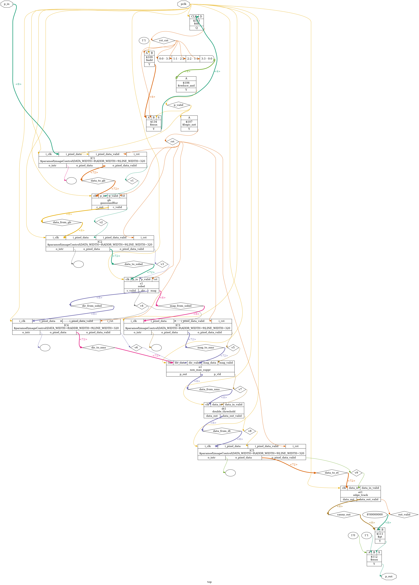
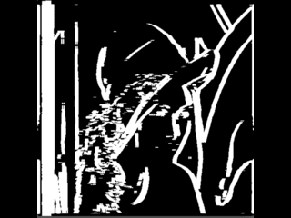
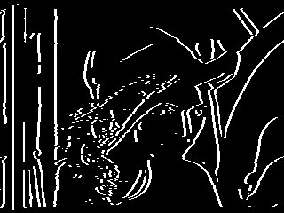
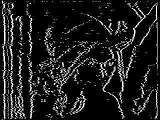

I got the full Canny edge detector running on Soan Papdi FPGA (iCE40 UP5K). An RP2040 feeds it a test image over a simple parallel bus and pulls the edges back out, one pixel per clock. No VGA, no framebuffer, no camera — just a binary file in, edges out, and a small screen showing the result.
Canny is usually taught as five separate passes over a whole image in memory: blur, find gradients, thin them, threshold, then connect the weak edges to strong ones. On hardware you don’t need to keep a full frame around. Every stage can work on a pixel the moment it arrives and hand the result straight to the next stage. So the whole thing becomes one continuous pipeline. A pixel goes in one end of the chip and a few clocks later an answer (edge or not) comes out the other end.
On the PC side take any photo, resize it to 320×240, convert it to grayscale, and store raw bytes into a file called input.bin.
That file goes onto the RP2040. The RP2040 streams those bytes, one pixel at a time, over a plain 8-bit parallel bus into the FPGA and collects the single-bit answers that come back. It also packs those bits into another binary file (output_edge.bin) and pushes the same bits straight to the spi display .
Inside the iCE40 the image never sits in a full frame buffer. It flows through five pipeline stages in order:
A pixel goes in, gets processed by every stage, and an edge/no-edge decision comes out a fixed number of clocks later.
Here's what the synthesized design actually looks like at the gate level:

Edge detectors hate noise. A single noisy pixel can look like a tiny edge. So the first stage softly blurs the image with a 3×3 kernel:
| 1 | 2 | 1 |
| 2 | 4 | 2 |
| 1 | 2 | 1 |
This smooths out random noise before the real edge finding starts. The cost is a tiny loss of sharpness on real edges, but it’s worth it. The divide by 16 is free in hardware — just a right-shift.
This is where edges are actually detected. Two small kernels look at the same 3×3 window — one finds horizontal changes (Gx), the other finds vertical changes (Gy).
| -1 | 0 | 1 |
| -2 | 0 | 2 |
| -1 | 0 | 1 |
| 1 | 2 | 1 |
| 0 | 0 | 0 |
| -1 | -2 | -1 |
The strength of the edge is roughly |Gx| + |Gy| (Manhattan approximation the real magnitude). The direction of the edge (horizontal, vertical, or diagonal) comes from the ratio of Gx to Gy. That direction is needed for the next stage.
Sobel alone produces thick, blurry ridges instead of clean lines. This stage thins them. For every pixel it looks at the two neighbors that sit along the gradient direction. It only keeps the center pixel if it is stronger than both neighbors. Everything else is set to zero. Done right, a wide ridge collapses into a single-pixel-wide line.
Every surviving pixel is sorted into one of three buckets using two thresholds:
Choosing the two numbers is mostly trial and error. Too low and you keep noise; too high and you lose faint but real edges.
This is the last step. Every weak pixel is checked: if it is touching a strong edge pixel, it gets promoted to a real edge. If it is isolated, it is thrown away. This rescues the faint parts of real edges while still killing random noise.
The pipeline itself was the easy part. Getting it to produce clean, one-pixel-wide edges and talking to the RP2040 cleanly took more work.
The first version that worked end-to-end matched a software Canny almost perfectly — except the edges were wide. Issue was the direction calculation in the Sobel stage.
To decide whether an edge is horizontal, vertical or diagonal you compare the ratio of Gx and Gy against two angles (roughly 22.5° and 67.5°). I first tried to approximate those thresholds with bit-shifts just to not use DSP blocks. The approximation was just inaccurate enough that non-maximum suppression kept looking at the wrong neighbours, so real edges never got properly thinned.
The UP5K has eight hardware multipliers so i used them:
// Q12 fixed-point
threshold_low = (abs_gx * 1697) >> 12; // ≈ 0.4142
threshold_high = (abs_gx * 9890) >> 12; // ≈ 2.4142After that change the edges snapped to single-pixel width and matched the software reference almost bit-for-bit.


SPI looked like the obvious choice — only four wires. But It didn’t work. The pipeline can accept a new pixel every clock. SPI shifting one bit at a time simply couldn’t keep up. The hard SPI peripheral on the UP5K also needed more setup than I wanted, and a soft version built in fabric was unreliable.
At the same time the 512×512 test image was too big. The RP2040 has to hold both the input grayscale and the output edge map in RAM at once, and that size cant fit.
The solution solved both problems at once. I resized the image to 320×240 — the native resolution of the ST7789 display I already had. That reduced the memory requirement. With the smaller image I switched to a simple parallel bus: 8 data lines + 1 clock + 1 result line. One clock moves a whole pixel in and a result bit out. It was both faster and easier to get working. By luck the FPGA board had exactly 10 GPIOs.
When I first captured the output on the RP2040 I guessed the pipeline latency and got it wrong by about 4000 cycles. Each line-buffer stage was independently waiting for two full rows of real pixels before producing anything.
The fix was to change the line buffers so they pad the first couple of rows and columns with replicated border pixels instead of waiting. The delay dropped to a small, fixed, and easy-to-verify number of cycles.
Those three issues (direction math, data movement, and latency) were the main practical headaches.
Both directions use plain binary files.
input.bin is just the resized grayscale image: 320 × 240 bytes, one byte per pixel, stored row by row with no header at all. The RP2040 loads it into RAM once and then streams it out over the parallel bus, one byte (one pixel) per clock.
Coming back the other way, every pixel from the FPGA is only a single bit — edge or not. The RP2040 shifts eight of those bits into one byte before writing them out, so output_edge.bin ends up only 9,600 bytes for the whole image. The same bits are also sent straight to the ST7789 display as they arrive, so the file on disk and the picture on the screen are always identical.

| Resource | Used | Available | % Used |
|---|---|---|---|
| LUTs | 1633 | 5280 | 30% |
| Block RAM | 9 | 30 | 30% |
| DSP blocks | 2 | 8 | 25% |
| SPRAM | 0 | 4 | 0% |
| I/O pins | 10 | 96 | 10% |
| Global buffers | 6 | 8 | 75% |
| Max frequency | 48.14 MHz | ||
Under a third of the logic, a third of the block RAM, and only two of the eight DSP blocks. Plenty of headroom left.
Full RTL, firmware, and pin constraints: soan-papdi-examples/06-Canny-edge-detection